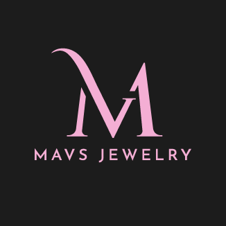
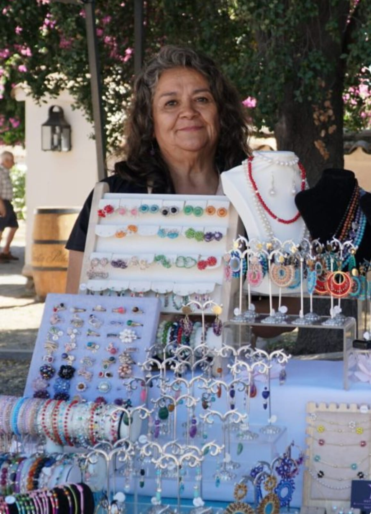

Joyas en Plata con Piedras Semipreciosas
Creación de joyas de plata nacional con piedras semipreciosas, cristales Swarovski, manufactura propia con materiales nobles y auténticos.


Arte en plata con elegancia joyas que te acompañan a brillar desde tu autenticidad

Somos un emprendimiento que nació de la pasión por transformar la plata y las piedras semipreciosas en joyas que transmiten energía, belleza y significado. Cada creación es elaborada a mano con dedicación, cuidando cada detalle para que sea más que un accesorio: un símbolo de conexión y autenticidad. Creemos que la elegancia también puede ser espiritual, y nuestras piezas buscan acompañar a cada persona en su camino.
Mi misión es transformar la plata y las piedras semipreciosas en joyas únicas que reflejen resiliencia y misticismo y agregar un atizbo de elegancia a la mostacilla con cristales y alambrismo. Cada diseño nace con el propósito de inspirar y conectar con la esencia de cada persona.
Mi visión es convertir a Mavs Jewelry en un referente de joyas artesanales en plata con piedras semipreciosas, mostacilla y alambrismo, reconocidos por transmitir elegancia, energía y significado en cada creación. Queremos que nuestras piezas no solo adornen, sino que acompañen a las personas como símbolos de resiliencia y conexión espiritual. Aspiramos a que cada joya sea un puente entre la belleza externa y la fuerza interior, inspirando a quienes la llevan a brillar con autenticidad.
Mi nombre es María Angélica, soy de oficio orfebre y les quiero contar que este emprendimiento nació desde la resiliencia y el deseo de transformar las dificultades en inspiración. A través de la plata y las piedras semipreciosas, la mostacilla calibrada y el alambrismo, encontré un camino para expresar fuerza, elegancia y misticismo. Cada joya representa no solo un accesorio, sino también un símbolo de superación y significado personal.

Creación de joyas de plata nacional con piedras semipreciosas, cristales Swarovski, manufactura propia con materiales nobles y auténticos.
Creación de joyas con técnicas de mostacilla calibrada Miyuki con cristales checos, tejidos a mano.


Creación de joyas en técnica de alambrismo, con alambre bañado en plata y oro en diferentes colores y con cristales checos de categoría premium.

Síguenos en redes sociales para enterarte de nuestras promociones especiales, concursos y lanzamientos exclusivos. ¡No te los pierdas!
"Excelente atención y productos de gran calidad."
"Mis aretes de plata con lapislázuli son hermosos. Se nota el trabajo artesanal y el cariño en cada detalle. ¡100% recomendado!"
"Compré un collar tejido en mostacilla para un regalo y la persona quedó fascinada. La calidad y el diseño son únicos. Volveré a comprar sin dudas."
Plata nacional, piedras semipreciosas auténticas y cristales premium garantizados.
Cada pieza es elaborada artesanalmente por María Angélica, orfebre de oficio.
Empacamos con cuidado para que tu joya llegue en perfectas condiciones a todo Chile.
Te asesoramos vía WhatsApp para encontrar la joya perfecta para ti o para regalar.